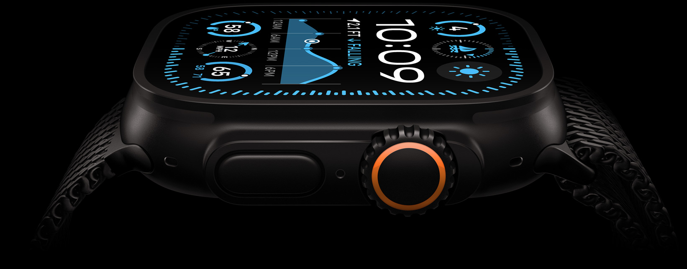

Design
Survival of the toughest
Ultra 2 is built for extremes. Now available in black titanium, the 49mm case is designed for the toughest environments, and it’s certified to EN13319, the internationally recognized standard for diving accessories.

Action on the spot. The customizable Action button gives you precise control over starting a workout, marking a segment, or moving on to the next interval.